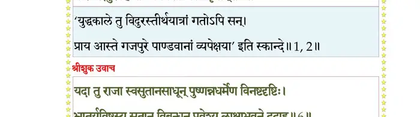
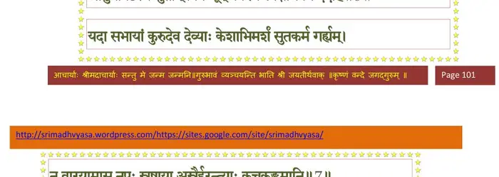
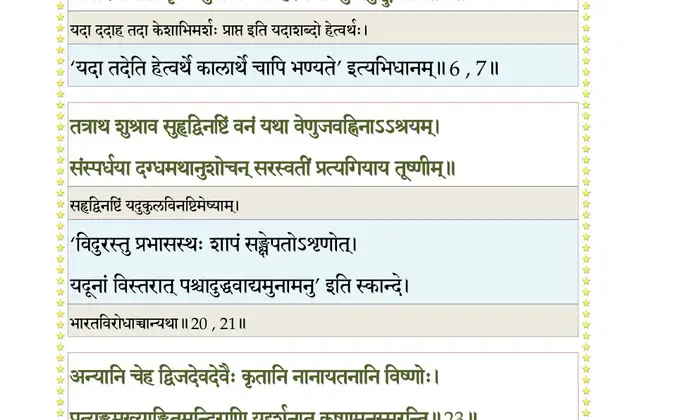
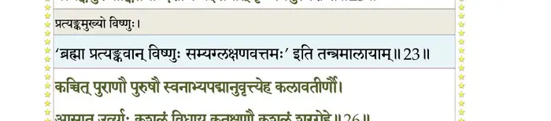
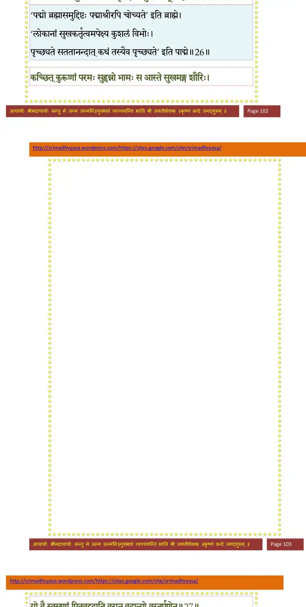
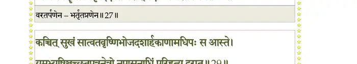
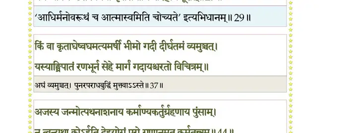
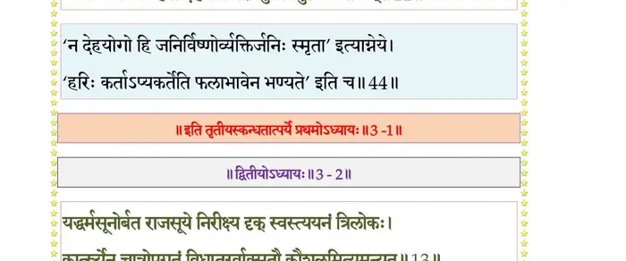

स्कन्ध 3 · अध्याय 1
श्लोक १
श्रीशुक उवाच–
एवमेतत् पुरा पृष्टो मैत्रेयो भगवान् किल ।
क्षत्त्रा वनं प्रविष्टेन त्यक्त्वा स्वगृहमृद्धिमत्।। १ ।।
एवमेतत् पुरा पृष्टो मैत्रेयो भगवान् किल ।
क्षत्त्रा वनं प्रविष्टेन त्यक्त्वा स्वगृहमृद्धिमत्।। १ ।।
भागवततात्पर्यनिर्णय
श्लोक २
यदा त्वयं मन्त्रकृद् वो भगवानखिलेश्वरः ।
१पौरवेन्द्रपुरं हित्वा प्रविवेशात्मसात्कृतम्।। २ ।।
१पौरवेन्द्रपुरं हित्वा प्रविवेशात्मसात्कृतम्।। २ ।।
भागवततात्पर्यनिर्णय

श्लोक ३
परीक्षिदुवाच–
कुत्र क्षत्तुर्भगवता मैत्रेयेणास सङ्गमः ।
कदा वा सह संवाद एतद् वर्णय नः प्रभो।। ३ ।।
कुत्र क्षत्तुर्भगवता मैत्रेयेणास सङ्गमः ।
कदा वा सह संवाद एतद् वर्णय नः प्रभो।। ३ ।।
श्लोक ४
न ह्यल्पार्थोदयस्तस्य विदुरस्यामलात्मनः ।
तस्मिन् वरीयसि प्रश्नः साधुवादोपबृंहितः।। ४ ।।
तस्मिन् वरीयसि प्रश्नः साधुवादोपबृंहितः।। ४ ।।
श्लोक ५
सूत उवाच–
स एवमृषिवर्योऽयं पृष्टो राज्ञा परीक्षिता ।
प्रत्याह तं सुबहुवित् प्रीतात्मा श्रूयतामिति।। ५ ।।
स एवमृषिवर्योऽयं पृष्टो राज्ञा परीक्षिता ।
प्रत्याह तं सुबहुवित् प्रीतात्मा श्रूयतामिति।। ५ ।।
श्लोक ६
श्रीशुक उवाच–
यदा तु राजा स्वसुतानसाधून् पुष्णन्नधर्मेण विनष्टदृष्टिः ।
भ्रातुर्यविष्ठस्य सुतान् विबन्धून् प्रवेश्य लाक्षाभवने ददाह।। ६ ।।
यदा तु राजा स्वसुतानसाधून् पुष्णन्नधर्मेण विनष्टदृष्टिः ।
भ्रातुर्यविष्ठस्य सुतान् विबन्धून् प्रवेश्य लाक्षाभवने ददाह।। ६ ।।
भागवततात्पर्यनिर्णय

श्लोक ७
यदा सभायां कुरुदेवदेव्याः केशाभिमर्शं सुतकर्म गर्ह्यम् ।
न वारयामास नृपः स्नुषाया और्हरन्त्याः कुचकुङ्कुमानि।। ७ ।।
न वारयामास नृपः स्नुषाया और्हरन्त्याः कुचकुङ्कुमानि।। ७ ।।
भागवततात्पर्यनिर्णय

श्लोक ८
द्यूते त्वधर्मेण जितस्य साधोः सत्यावलम्बस्य वनागतस्य१ ।
न याचितोऽदात् समयेन दायं तमो जुषाणो यदजातशत्रोः।। ८ ।।
न याचितोऽदात् समयेन दायं तमो जुषाणो यदजातशत्रोः।। ८ ।।
श्लोक ९
यदा तु पार्थप्रहितः सभायां जगद्गुरुर्यानि जगाद कृष्णः ।
न तानि पुंसाममृतायनानि राजाऽनुमेने हृतपुण्यलेशः।। ९ ।।
न तानि पुंसाममृतायनानि राजाऽनुमेने हृतपुण्यलेशः।। ९ ।।
श्लोक १०
यदोपहूतो भवनं प्रविष्टो मन्त्राय पृष्टः किल पूर्वजेन ।
अथाह तं मन्त्रदृशां वरीयान् यन्मन्त्रिणो वैदुरिकं वदन्ति।। १० ।।
अथाह तं मन्त्रदृशां वरीयान् यन्मन्त्रिणो वैदुरिकं वदन्ति।। १० ।।
श्लोक ११
अजातशत्रोः प्रतियच्छ दायं तितिक्षतो दुर्विषहं तवागः ।
सहानुजो यत्र वृकोदरो हि स्वशत्रुहा यं त्वमलं बिभेषि।। ११ ।।
सहानुजो यत्र वृकोदरो हि स्वशत्रुहा यं त्वमलं बिभेषि।। ११ ।।
श्लोक १२
यदा तु पार्थान् भगवान् मुकुन्दो गृहीतवान् २सक्षितिदेवदेवः ।
आस्ते स्वपुर्यां यदुदेवदेवो विनिर्जिताशेषनृदेवदेवः।। १२ ।।
आस्ते स्वपुर्यां यदुदेवदेवो विनिर्जिताशेषनृदेवदेवः।। १२ ।।
श्लोक १३
स एष दोषः पुरुषद्विडास्ते गृहं प्रविष्टो यमपत्यमत्या ।
पुष्णासि कृष्णाद् विमुखो गतश्रीस्त्यजाश्वथैनं कुलकौशलाय।।१३।।
पुष्णासि कृष्णाद् विमुखो गतश्रीस्त्यजाश्वथैनं कुलकौशलाय।।१३।।
श्लोक १४
इत्यूचिवांस्तत्र सुयोधनेन प्रवृद्धकोपस्फुरिताधरेण ।
असत्कृतः सत्स्पृहणीयशीलः क्षत्ता सकर्णानुजसौबलेन।। १४ ।।
असत्कृतः सत्स्पृहणीयशीलः क्षत्ता सकर्णानुजसौबलेन।। १४ ।।
श्लोक १५
क एनमत्रोपजुहाव जिह्मं दास्याः सुतं यद्बलिनैव पुष्टः ।
तस्मिन् प्रतीपः परकृत्य आस्ते निर्वास्यतामाशु पुराच्छ्वसानः ।। १५ ।।
तस्मिन् प्रतीपः परकृत्य आस्ते निर्वास्यतामाशु पुराच्छ्वसानः ।। १५ ।।
श्लोक १६
स इत्थमत्युल्बणकर्णबाणैर्भ्रातुः पुरो मर्मसु ताडितोऽपि ।
स्मयन् धनुर्द्वारि निधाय मायां गतव्यथोऽयादुरु मानयानः।। १६ ।।
स्मयन् धनुर्द्वारि निधाय मायां गतव्यथोऽयादुरु मानयानः।। १६ ।।
श्लोक १७
स निर्गतः कौरवपुण्यलब्धगजाह्वयात् तीर्थपदः पदानि ।
अन्वाक्रमत् पुण्यचिकीर्षयोर्व्यामधिष्ठितो यानि सहस्रमूर्तिः।। १७ ।।
अन्वाक्रमत् पुण्यचिकीर्षयोर्व्यामधिष्ठितो यानि सहस्रमूर्तिः।। १७ ।।
श्लोक १८
वनेषु पुण्योपवनाद्रिकुञ्जेष्वपङ्कतोयेषु सरित्सरस्सु ।
अनन्तलिङ्गैः समलङ्कृतेषु चचार तीर्थायतनेष्वनन्यः।। १८ ।।
अनन्तलिङ्गैः समलङ्कृतेषु चचार तीर्थायतनेष्वनन्यः।। १८ ।।
श्लोक १९
गां पर्यटन् मेध्यविविक्तवृत्तिः सदाऽऽप्लुतोऽधःशयनावधूतः ।
अलक्षितः स्वैरवधूतवेषो१ व्रतानि चेरे हरितोषणानि।। १९ ।।
अलक्षितः स्वैरवधूतवेषो१ व्रतानि चेरे हरितोषणानि।। १९ ।।
श्लोक २०
इत्थं व्रजन् भारतमेव वर्षं कालेन यावद् गतवान् प्रभासम् ।
तावच्छशास क्षितिमेकचक्रामेकातपत्रामजितेन पार्थः।। २० ।।
तावच्छशास क्षितिमेकचक्रामेकातपत्रामजितेन पार्थः।। २० ।।
श्लोक २१
तत्राथ शुश्राव सुहृद्विनष्टिं वनं यथा वेणुजवह्निनाऽऽश्रयम्२ ।
संस्पर्धया दग्धमथानुशोचन् सरस्वतीं प्रत्यगियाय तूष्णीम्।। २१ ।।
संस्पर्धया दग्धमथानुशोचन् सरस्वतीं प्रत्यगियाय तूष्णीम्।। २१ ।।
श्लोक २२
तस्यां त्रितस्योशनसो मनोश्च पृथोरथाग्नेरसितस्य वायोः ।
तीर्थं सुदासस्य गवां गुहस्य यच्छ्राद्धदेवस्य स आसिषेवे।। २२ ।।
तीर्थं सुदासस्य गवां गुहस्य यच्छ्राद्धदेवस्य स आसिषेवे।। २२ ।।
श्लोक २३
अन्यानि चेह द्विजदेवदेवैः कृतानि नानायतनानि विष्णोः ।
प्रत्यङ्कमुख्याङ्कितमन्दिराणि यद्दर्शनात् कृष्णमनुस्मरन्ति।। २३ ।।
प्रत्यङ्कमुख्याङ्कितमन्दिराणि यद्दर्शनात् कृष्णमनुस्मरन्ति।। २३ ।।
भागवततात्पर्यनिर्णय

श्लोक २४
ततस्त्वतिव्रज्य सुराष्ट्रमृद्धं सौवीरमत्स्यान् कुरुजाङ्गलांश्च ।
कालेन तावद् यमुनामुपेत्य तत्रोद्धवं भागवतं ददर्श।। २४ ।।
कालेन तावद् यमुनामुपेत्य तत्रोद्धवं भागवतं ददर्श।। २४ ।।
श्लोक २५
स वासुदेवानुचरं प्रशान्तं बृहस्पतेः प्रप्तनयं प्रतीतम् ।
आलिङ्ग्य गाढं प्रणयेन भद्रं स्वानामपृच्छद् भगवत्प्रजानाम्।।२५।।
आलिङ्ग्य गाढं प्रणयेन भद्रं स्वानामपृच्छद् भगवत्प्रजानाम्।।२५।।
श्लोक २६
कच्चित् पुराणौ पुरुषौ स्वनाभ्यपद्मानुवृत्त्येह कला(किला)वतीर्णौ ।
आसात उर्व्याः कुशलं विधाय कृतक्षणौ कुशलं शूरगेहे।। २६ ।।
आसात उर्व्याः कुशलं विधाय कृतक्षणौ कुशलं शूरगेहे।। २६ ।।
भागवततात्पर्यनिर्णय

श्लोक २७
कश्चित् कुरूणां परमः सुहृन्नो भामः स आस्ते सुखमङ्ग शौरिः ।
यो वै स्वसॄणां पितृवद् ददाति वरान् वदान्यो वरतर्पणेन।। २७ ।।
यो वै स्वसॄणां पितृवद् ददाति वरान् वदान्यो वरतर्पणेन।। २७ ।।
भागवततात्पर्यनिर्णय

श्लोक २८
कच्चिद् वरूथाधिपतिर्यदूनां प्रद्युम्न आस्ते सुखमङ्ग वीरः ।
यं रुक्मिणी भगवतोऽभिलेभे आराध्य विप्रन् स्मरमादिसर्गे।।२८।।
यं रुक्मिणी भगवतोऽभिलेभे आराध्य विप्रन् स्मरमादिसर्गे।।२८।।
श्लोक २९
कच्चित् सुखं सात्वतवृष्णिभोजदाशार्हकाणामधिपः सः आस्ते ।
यमभ्यषिञ्चच्छतपत्रनेत्रो नृपासनाधिं परिहृत्य दूरात्।। २९ ।।
यमभ्यषिञ्चच्छतपत्रनेत्रो नृपासनाधिं परिहृत्य दूरात्।। २९ ।।
भागवततात्पर्यनिर्णय

श्लोक ३०
कच्चिद्धरेः सौम्यसुतः सदृक्ष१ आस्तेऽग्रणी रथिनां साधु साम्बः ।
असूत यं जाम्बवती व्रताढ्या देवं गुहं योऽम्बिकया धृतोऽग्रे।। ३० ।।
असूत यं जाम्बवती व्रताढ्या देवं गुहं योऽम्बिकया धृतोऽग्रे।। ३० ।।
श्लोक ३१
क्षेमं स कच्चिद् युयुधान आस्ते यः फल्गुनाल्लब्धधनूरहस्यः ।
लेभेऽञ्जसाऽऽधोक्षजसेवयैव गतिं तदीयां यतिभिर्दुरापाम्।। ३१ ।।
लेभेऽञ्जसाऽऽधोक्षजसेवयैव गतिं तदीयां यतिभिर्दुरापाम्।। ३१ ।।
श्लोक ३२
कच्चिद् बुधः स्वस्त्यनमीव आस्ते श्वफल्कपुत्रो भगवत्प्रपन्नः ।
यः कृष्णपादाङ्कितमार्गपांसुष्वचेष्टत प्रोमविभिन्नधैर्यः।। ३२ ।।
यः कृष्णपादाङ्कितमार्गपांसुष्वचेष्टत प्रोमविभिन्नधैर्यः।। ३२ ।।
श्लोक ३३
कच्चिच्छिवं देवकभोजपुत्र्या विष्णुप्रजाया इव देवमातुः ।
या वै स्वगर्भेण बभार देवं त्रयी यथा यज्ञवितानमर्थम्।। ३३ ।।
या वै स्वगर्भेण बभार देवं त्रयी यथा यज्ञवितानमर्थम्।। ३३ ।।
श्लोक ३४
अपिस्विदास्ते भगवान् सुखं वा यः सात्वतां कामदुघोऽनिरुद्धः ।
यमामनन्ति स्म हि शब्दयोनिं मनोमयं सत्वतुरीयमर्थम्।। ३४ ।।
यमामनन्ति स्म हि शब्दयोनिं मनोमयं सत्वतुरीयमर्थम्।। ३४ ।।
श्लोक ३५
अपिस्विदन्ये च निजात्मदैवमनन्यवृत्त्या समनुव्रता ये ।
हार्दिक्यसत्यात्मजचारुदेष्णगदादयः स्वस्ति चरन्ति सौम्य।। ३५ ।।
हार्दिक्यसत्यात्मजचारुदेष्णगदादयः स्वस्ति चरन्ति सौम्य।। ३५ ।।
श्लोक ३६
अपि स्वदोर्भ्यां विजयाच्युताभ्यां धर्मेण धर्मः परिपाति सेतुम् ।
दुर्योधनोऽतप्यत यत्सभायां साम्राज्यलक्ष्म्या विजयानुवृत्त्या।। ३६ ।।
दुर्योधनोऽतप्यत यत्सभायां साम्राज्यलक्ष्म्या विजयानुवृत्त्या।। ३६ ।।
श्लोक ३७
किं वा कृताघेष्वघमत्यमर्षी भीमोऽहिवद् दीर्घतमं व्यमुञ्चत् ।
यस्यांघ्रिपातं रणभूर्न सेहे मार्गं गदायाश्चरतो विचित्रम्।। ३७ ।।
यस्यांघ्रिपातं रणभूर्न सेहे मार्गं गदायाश्चरतो विचित्रम्।। ३७ ।।
श्लोक ३८
कच्चिद् यशोधा रथयूथपानां गाण्डीवधन्वोपरतारिरास्ते ।
अलक्षितो यच्छरकूटगूढो मायाकिरातो गिरिशस्तुतोष।। ३८ ।।
अलक्षितो यच्छरकूटगूढो मायाकिरातो गिरिशस्तुतोष।। ३८ ।।
श्लोक ३९
यमावुतस्वित् तनयौ च माद्र्याः पार्थैर्वृतौ पक्ष्मभिरक्षिणीव ।
रेमात उद्धृत्य मृधे स्वरिक्थं सुधां सुपर्णाविव वज्रिवक्त्रात्।।३९।।
रेमात उद्धृत्य मृधे स्वरिक्थं सुधां सुपर्णाविव वज्रिवक्त्रात्।।३९।।
श्लोक ४०
अहो पृथाऽपि ध्रियतेऽर्भकार्थे राजर्षिवर्येण विनापि तेन ।
यस्त्वेक वीरोऽतिरथो विजिग्ये धनुर्द्वितीयः ककुभश्चतस्रः।। ४० ।।
यस्त्वेक वीरोऽतिरथो विजिग्ये धनुर्द्वितीयः ककुभश्चतस्रः।। ४० ।।
श्लोक ४१
सौम्यानुशोचे तमधः पतन्तं भ्रात्रे परेताय विदुद्रुहे यः ।
निर्यापितो येन सुहृत् स्वपुर्या अहं स्वपुत्रान् समनुव्रतेन।। ४१ ।।
निर्यापितो येन सुहृत् स्वपुर्या अहं स्वपुत्रान् समनुव्रतेन।। ४१ ।।
श्लोक ४२
सोऽहं हरेर्मर्त्यविडम्बनेन दृशो नृणां चालयतो विधातुः ।
नान्योपलक्ष्यः पदवीं प्रसादाच्चरामि पश्यन् गतविस्मयोऽत्र।। ४२ ।।
नान्योपलक्ष्यः पदवीं प्रसादाच्चरामि पश्यन् गतविस्मयोऽत्र।। ४२ ।।
श्लोक ४३
नूनं नृपाणां त्रिमदोत्पथानां महीं मुहुश्चालयतां चमूभिः ।
वधात् प्रपन्नार्तिजिहीर्षयेशो ह्यपैक्षताघं भगवान् कुरूणाम्।। ४३ ।।
वधात् प्रपन्नार्तिजिहीर्षयेशो ह्यपैक्षताघं भगवान् कुरूणाम्।। ४३ ।।
श्लोक ४४
अजस्य जन्मोत्पथनाशनाय कर्माण्यकर्तुग्रहणाय पुंसाम् ।
न त्वन्यथा कोऽर्हति देहयोगं परो गुणानामुत कर्मतन्त्रम्।। ४४ ।।
न त्वन्यथा कोऽर्हति देहयोगं परो गुणानामुत कर्मतन्त्रम्।। ४४ ।।
भागवततात्पर्यनिर्णय

श्लोक ४५
तस्य प्रपन्नाखिललोकपानामवस्थितानामनुशासने स्वे ।
अर्थाय जातस्य यदुष्वजस्य वार्तां सखे कीर्तय तीर्थकीर्तेः।। ४५ ।।
अर्थाय जातस्य यदुष्वजस्य वार्तां सखे कीर्तय तीर्थकीर्तेः।। ४५ ।।
।। इति श्रीमद्भागवते तृतीयस्कन्धे प्रथमोऽध्यायः ।।